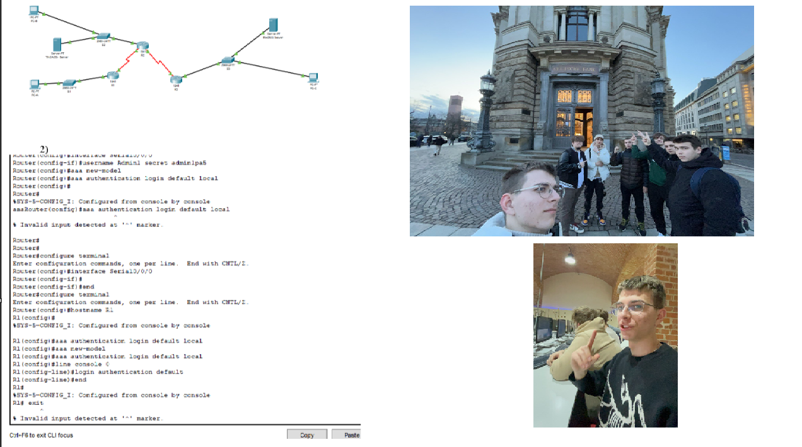

RTK button
About ME
Biography
Portfolio
Matvey Strelcenok
Riga Technical College
10-28 June

Portfolio:
-Projekti :
ERASMUS+ Vitalis 2024 (Vācijā)
Cisco packet tracer (praktiskais darbs RTK) 2023
Gausa metodes kalkulators (praktiskais darbs RTK) 2024